If there is one prayer that you should pray/sing every day and every hour, it is the
LORD's prayer (Our FATHER in Heaven prayer)
- Samuel Dominic Chukwuemeka
It is the most powerful prayer.
A pure heart, a clean mind, and a clear conscience is necessary for it.
For in GOD we live, and move, and have our being.
- Acts 17:28
The Joy of a Teacher is the Success of his Students.
- Samuel Chukwuemeka
Theorems on Circles

I greet you this day,
First: read the notes.
Second: view the videos.
Third: solve the questions/solved examples.
Fourth: check your solutions with my thoroughly-explained examples.
Comments, ideas, areas of improvement, questions, and constructive criticisms are welcome. You may contact me.
If you are my student, please do not contact me here. Contact me via the school's system.
Thank you for visiting.
Samuel Dominic Chukwuemeka (Samdom For Peace) B.Eng., A.A.T, M.Ed., M.S
Objectives
Students will:
(1.) Discuss the terms used in circle theorems.
(2.) State circle theorems.
(3.) Prove circle theorems.
(4.) Solve problems on circle theorems.
Vocabulary Words
locus, point, equidistant (equal distance), radius, diameter, chord, secant, tangent, Make the connection: equilateral (equal sides), equiangular (equal angles), equity (equality)
Definitions
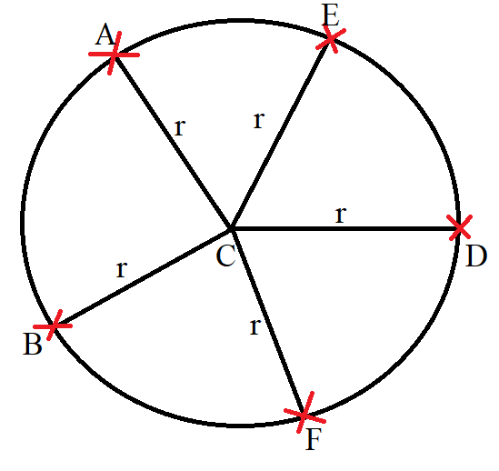
(1.) A circle is the locus of points equidistant from a fixed point.
The fixed point is known as the center of the circle.
The equal distance (equidistant) of the points from the fixed point is known as the radius of the circle.
$
C = center \\[3ex]
r = radius \\[3ex]
|CA| = |CB| = |CD| = |CE| = |CF| = r = radius \\[3ex]
$
(2.) The circumference of a circle is the entire distance around the circle.
It is also known as the perimeter of the circle.
(3.) The chord in a circle is the line segment that joins two points on the circumference of the circle.
(4.) The diameter of a circle is the line segment that joins two points on the circumference of the circle,
which passes through the center of the circle.
It is the lonegest chord.
It is twice the radius of the circle.
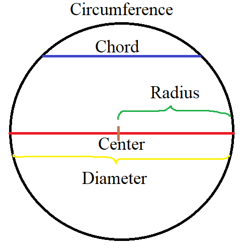
(5.) A secant to a circle is the line segment that intersects (cuts) two points on the circle.
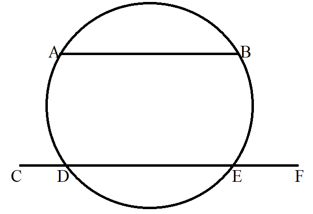
We have 2 chords and 1 secant line
The first chord joins the two points (Point A and Point B) on the circumference of the circle.
The second chord joins the two points (Point D and Point E) on the circumference of the circle.
The secant cuts the 2 points (Points D and E) on the circumference of the circle
$
chords = |AB| \;\;and\;\; |DE| \\[3ex]
secant = |CF| \\[3ex]
$
Student: Mr. C
Teacher: What's good?
Student: What if I write secant AB rather than chord AB?
Is that going to be a problem?
Teacher: If you wrote it as part of a reason in solving a question, I may overlook it.
However, if I wanted to assess your knowledge on the difference between a secant and a chord and you wrote it
that way, I may deduct points.
Notice the terms: joins (chord), cuts (secant), intersects (secant)
(6.) A tangent line to a circle is the line that touches only one point on the curve.
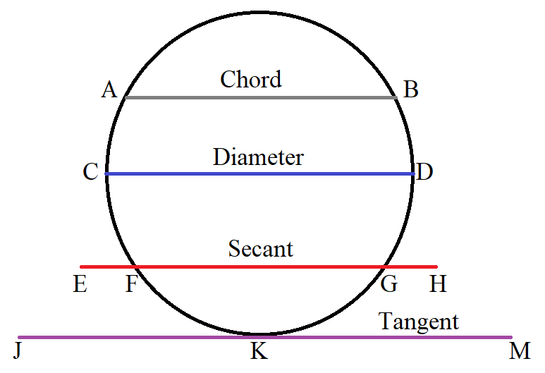
$ AB = chord \\[3ex] CD = diameter\;(longest\;\;chord) \\[3ex] EFGH = secant:\;\;points\;\;cut = Point\;F\;\;and\;\;Point\;G \\[3ex] JKM = tangent:\;\;point\;\;touched = Point\;K \\[3ex] $
(7.) The central angle is the angle formed at the center of the circle by two radii
The intercepted arc is part of the circumference of a circle that is formed by a chord or a secant.
The measure of the angle at the center (central angle) is equal to the measure of it's intercepted arc and vice versa.
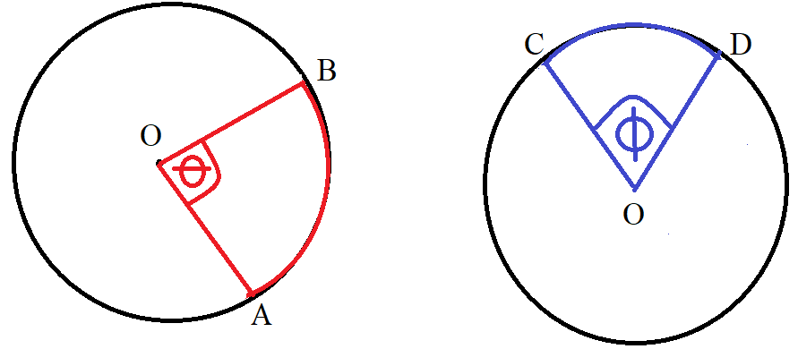
$ Center = O \\[3ex] m\overset{\huge\frown}{AB} = \angle\theta \\[3ex] m\overset{\huge\frown}{CD} = \angle\phi \\[3ex] $
(8.) The inscribed angle is the angle whose vertex is on the circumference of the circle.
Symbols and Meanings
- $r$ = radius
- $d$ = diameter
- $\pi = pi = \dfrac{22}{7}$
- $A$ = area
- $C$ = circumference
Formulas
- To solve for a specified variable for each formula, please review Solved Examples: Literal Equations
- $d = 2r$
- $r = \dfrac{d}{2}$
- $C = \pi d$
- $C = 2\pi r$
- $A = \pi r^2$
- $A = \dfrac{\pi d^2}{4}$
Circle Theorems
For all the circles here (here only): O is the center of the circle
(1.) The angle in a semicircle is a right angle (an angle of 90°).
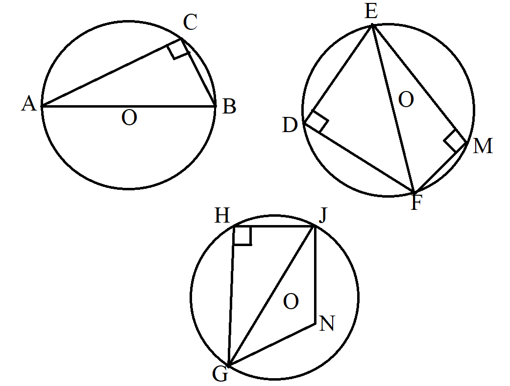
The diameter of a circle divides the circle into two equal parts known as semicircles.
So, if you are given the center of a circle and/or the diameter of the circle, check to see if you can apply this theorem.
$
\underline{Diameters} \\[3ex]
AOB \\[3ex]
EOF \\[3ex]
GOJ \\[3ex]
\underline{\angle s\;\;in\;\;a\;\;semicircle} \\[3ex]
\angle ACB = 90^\circ \\[3ex]
\angle EDF = 90^\circ \\[3ex]
\angle EMF = 90^\circ \\[3ex]
\angle GHJ = 90^\circ \\[3ex]
$
NOTE: $GNJ$ is not a semicircle
Hence, $\angle GNJ \ne 90^\circ$ unless specified otherwise
The angle in a semicircle must be the angle formed by the intersection of two chords, where one end of each chord intersects
with the diameter of the circle, and the other end of each chord touches the circumference of the circle.
(2.) Angles in the same segment of a circle are equal.
OR
Angles subtended by a chord of a circle in the same segment of the circle are equal.
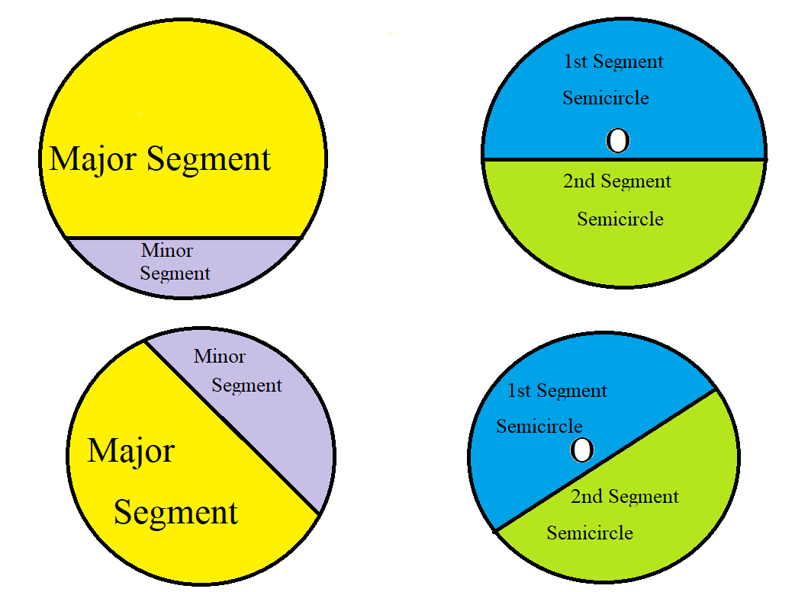
In this theorem:
(I.) The first thing is to understand the segment of a circle. (as shown in the diagram above)
The segment consists of both the chord and the circumference (perimeter of the segment) including the
area in-between the chord and the circumference (area of the segment)
(II.) Usually, we have the major segment and the minor segment.
However, we can also two equal segments (also known as semicircles)
As shown in the diagram above
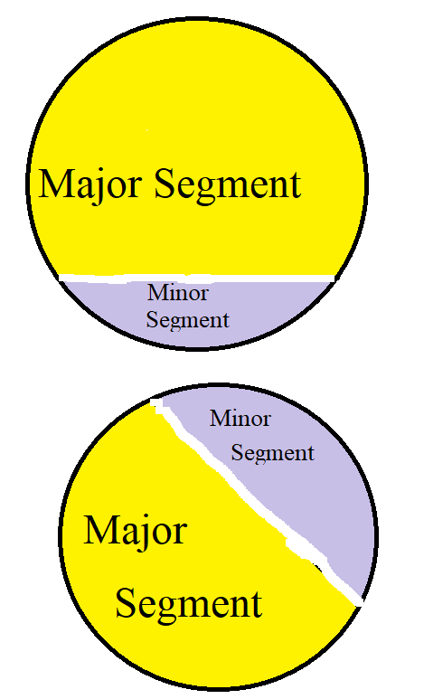
(III.) The main chord (chord separating the major segment from the minor segment) must not be indicated
(as shown in the second diagram)
The theorem still holds even if that chord is not indicated in the segment.
So, what should you do in that case?
Try to draw a dotted main chord (visualize it and/or draw it on the paper) and find the angles in that segment.
Let us do some examples.
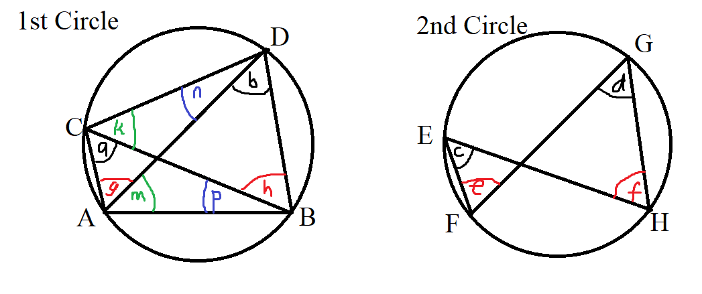
$ \underline{Main\;\;Chord:\;\;AB} \\[3ex] Indicated\;\;in\;\;the\;\;1st\;\;Circle \\[3ex] Not\;\;indicated\;\;in\;\;the\;\;2nd\;\;Circle\;\;(should\;\;have\;\;been\;\;drawn\;\;as\;\;FH)\\[3ex] a = b ...\angle s\;\;in\;\;the\;\;same\;\;major\;\;segment\;\;1st\;\;circle \\[3ex] c = d ...\angle s\;\;in\;\;the\;\;same\;\;major\;\;segment\;\;2nd\;\;circle \\[3ex] \underline{Main\;\;Chord:\;\;CD} \\[3ex] Indicated\;\;in\;\;the\;\;1st\;\;Circle \\[3ex] Not\;\;indicated\;\;in\;\;the\;\;2nd\;\;Circle\;\;(should\;\;have\;\;been\;\;drawn\;\;as\;\;EG)\\[3ex] g = h ...\angle s\;\;in\;\;the\;\;same\;\;major\;\;segment\;\;1st\;\;circle \\[3ex] e = f ...\angle s\;\;in\;\;the\;\;same\;\;major\;\;segment\;\;2nd\;\;circle \\[3ex] \underline{Main\;\;Chord:\;\;BD} \\[3ex] Indicated\;\;in\;\;the\;\;1st\;\;Circle \\[3ex] Does\;\;not\;\;apply\;\;in\;\;the\;\;2nd\;\;Circle \\[3ex] m = k ...\angle s\;\;in\;\;the\;\;same\;\;major\;\;segment \\[3ex] \underline{Main\;\;Chord:\;\;AC} \\[3ex] Indicated\;\;in\;\;the\;\;1st\;\;Circle \\[3ex] Does\;\;not\;\;apply\;\;in\;\;the\;\;2nd\;\;Circle \\[3ex] n = p ...\angle s\;\;in\;\;the\;\;same\;\;major\;\;segment $
(IV.) Angles in the same segment (major segment or minor segment or equal segment/semicircle) are equal.
Angles in the same segment means that the
angles formed by the intersection of any two chords at the circumference of the circle must be in the same segment.
If there is any angle that is formed by the two chords where both chords do not touch the circumference of the circle, then
this theorem does not apply.
Both chords that formed that angle must touch the circumference of the circle and must be in the same segment.
Let us do more examples.
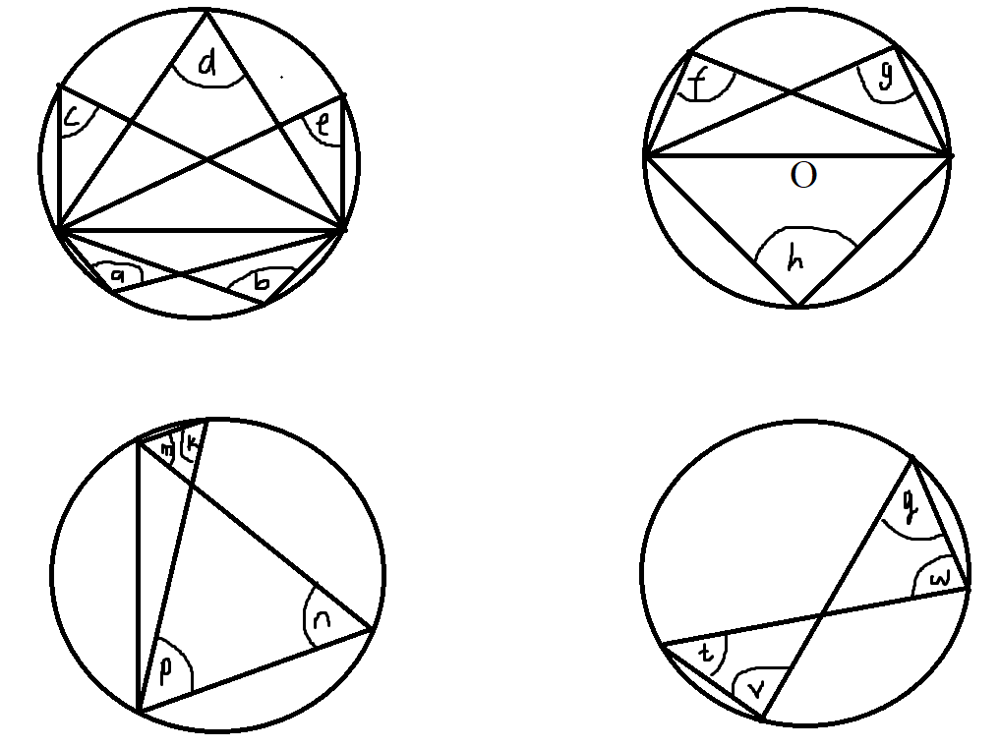
$ a = b ...\angle s\;\;in\;\;the\;\;same\;\;segement\;\;are\;\;equal \\[3ex] c = d = e ...\angle s\;\;in\;\;the\;\;same\;\;segement\;\;are\;\;equal \\[3ex] f = g ...\angle s\;\;in\;\;the\;\;same\;\;segement\;\;are\;\;equal \\[3ex] f = g = 90^\circ ... \angle\;\;in\;\;a\;\;semicircle \\[3ex] h = 90^\circ ... \angle\;\;in\;\;a\;\;semicircle \\[3ex] \therefore f = g = h \\[3ex] k = n ...\angle s\;\;in\;\;the\;\;same\;\;segement\;\;are\;\;equal \\[3ex] m = p ...\angle s\;\;in\;\;the\;\;same\;\;segement\;\;are\;\;equal \\[3ex] t = q ...\angle s\;\;in\;\;the\;\;same\;\;segement\;\;are\;\;equal \\[3ex] v = w ...\angle s\;\;in\;\;the\;\;same\;\;segement\;\;are\;\;equal $
(3.) The angle which an arc of a circle subtends at the center is twice the angle which the same
arc of the circle subtends at the circumference.
OR
The measure of any angle inscribed in a circle is half the measure of the intercepted arc.
In the second case:
The inscribed angle is the angle at the circumference.
The intercepted arc is equal to the angle at the center.
This is another theorem to watch out for when you are given the center of the circle.
It deals with the relationship between the angle at the center of the circle (central angle) and the similarly drawn angle at the
circumference.
Check out the way these angles resemble in these diagrams.
The angle at the center must be similarly drawn or must similarly resemble the angle at the circumference for
this theorem to hold.
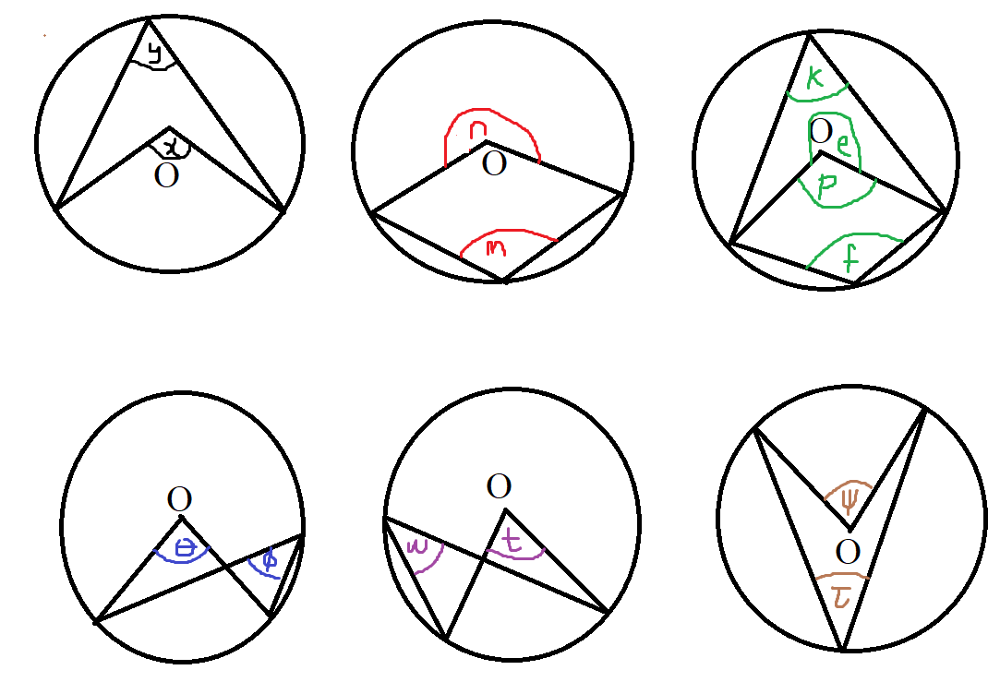
$ \boldsymbol{\angle \;\;at\;\;center = 2 * \angle\;\;at\;\;circumference} \\[3ex] x = 2y \\[3ex] n = 2m \\[3ex] p = 2k \\[3ex] e = 2f \\[3ex] \theta = 2\phi \\[3ex] t = 2w \\[3ex] \psi = 2\tau $
(4.) The sum of the interior opposite angles of a cyclic quadrilateral is 180°
OR
The interior opposite angles of a cyclic quadrilateral are supplementary
A Quadrilateral is any four-sided polygon.
It has four vertices/corners.
A Cyclic Quadrilateral is a quadrilateral whose four vertices lie on the circumference of the circle.
It is also known as an Inscribed Quadrilateral
Because it is a quadrilateral, the sum of the four interior angles is equal to $360^\circ$
Because it is a cyclic quadrilateral, the sum of the two interior opposite angles is $180^\circ$
NOTE: A cyclic quadrilateral must have all four chords that connects all four points on the circumference of the
circle.
Because the four vertices touch the circumference of the circle, those vertices are points on the circumference of the circle.
Those vertices must be joined by chords.
So, those four vertices must be joined by four chords when each chord joins two vertices/points.
Can you spot which of these circles is not a cyclic quadrilateral?
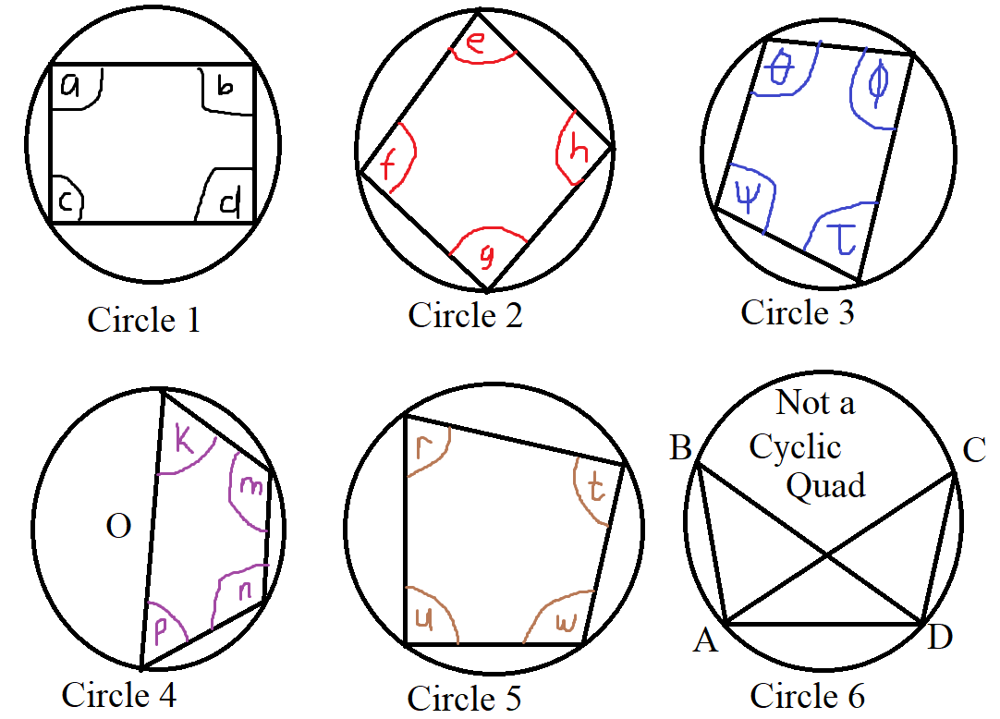
$
\underline{Circles\;\;1\;\;through\;\;5} \\[3ex]
\boldsymbol{Interior\;\;opposite\;\;\angle s\;\;of\;\;a\;\;Cyclic\;\;Quadrilateral\;\;are\;\;supplementary} \\[3ex]
a + d = 180^\circ \\[3ex]
c + b = 180^\circ \\[3ex]
e + g = 180^\circ \\[3ex]
f + h = 180^\circ \\[3ex]
\theta + \tau = 180^\circ \\[3ex]
\psi + \phi = 180^\circ \\[3ex]
k + n = 180^\circ \\[3ex]
p + m = 180^\circ \\[3ex]
r + w = 180^\circ \\[3ex]
u + t = 180^\circ \\[3ex]
$
The diameter is also a chord. Hence, Circle 4 is a cyclic quadrilateral.
However, Circle 6 is not a cyclic quadrilateral because there is no chord joining Points B and C
Hence this theorem does not apply to Circle 6
But what theorem would apply to Circle 6?
Check out Theorem 2
(5.) The exterior angle of a cyclic quadrilateral is equal to the interior opposite angle.
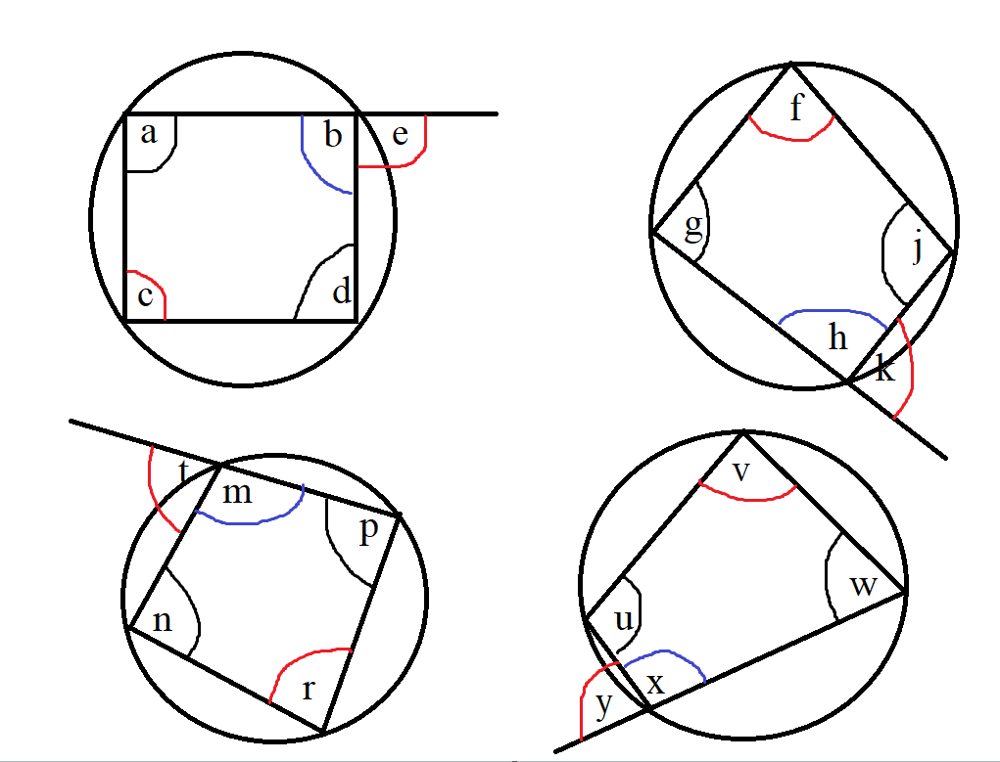
An easy way to recognize and apply this theorem is this:
(1st.) Locate the interior angle on the same straight line as the exterior angle.
That angle is known as the interior adjacent angle to the exterior angle.
Please note that it must be on the same straight line as the exterior angle.
(2nd.) Then, locate the interior angle directly opposite that interior adjacent angle.
That angle is known as the interior opposite angle to the exterior angle.
That interior opposite angle is equal to the exterior angle.
Recap:
(1.) The circle must be a cyclic quadrilateral.
This theorem applies only to cyclic quadrilaterals.
(2.) The interior adjacent angle must be on the same straight line as the exterior angle.
Those are the two angles that must be on the same straight line.
(3.) The interior opposite angle is the angle that is directly opposite the interior adjacent angle to the exterior angle.
That interior opposite angle is equal to the exterior angle.
$
Exterior\;\;\angle\;\;of\;\;a\;\;cyclic\;\;quad = interior\;\;opposite\;\;\angle \\[3ex]
e = c \\[3ex]
k = f \\[3ex]
t = r \\[3ex]
y = v \\[5ex]
$
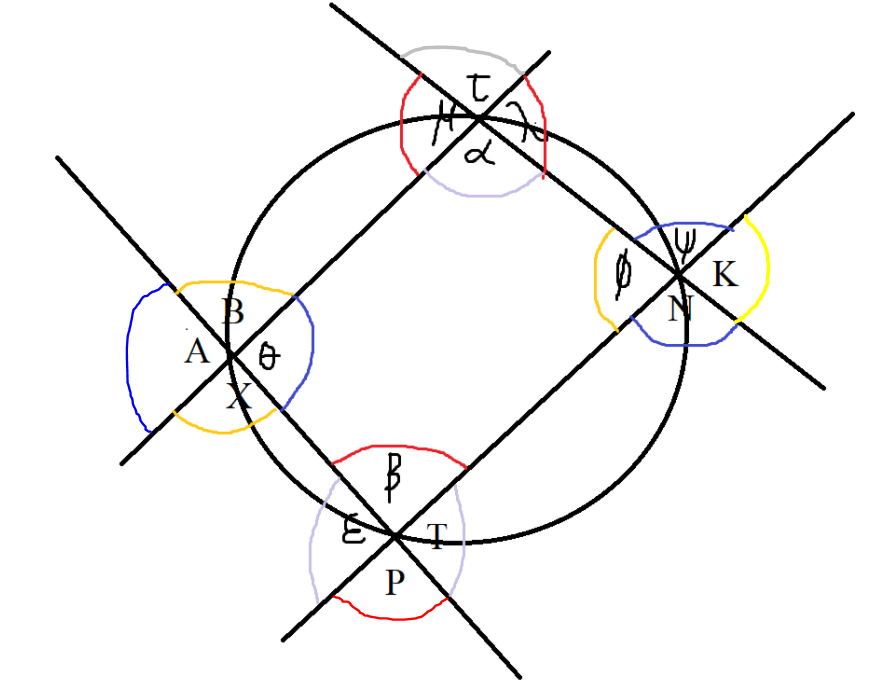
$ Exterior\;\;\angle\;\;of\;\;a\;\;cyclic\;\;quad = interior\;\;opposite\;\;\angle \\[3ex] \lambda = \beta \\[3ex] \mu = \beta \\[5ex] B = \phi \\[3ex] X = \phi \\[5ex] \psi = \theta \\[3ex] N = \theta \\[5ex] \epsilon = \alpha \\[3ex] T = \alpha \\[5ex] Vertical\;\;\angle s\;\;are\;\;equal \\[3ex] \mu = \lambda \\[3ex] \tau = \alpha \\[5ex] B = X \\[3ex] A = \theta \\[5ex] P = \beta \\[3ex] \epsilon = T \\[5ex] \phi = K \\[3ex] \psi = N \\[5ex] \angle s\;\;on\;\;a\;\;straight\;\;line \\[3ex] \alpha + \mu = 180^\circ \\[3ex] \alpha + \lambda = 180^\circ \\[3ex] \mu + \tau = 180^\circ \\[3ex] \tau + \lambda = 180^\circ \\[5ex] A + B = 180^\circ \\[3ex] B + \theta = 180^\circ \\[3ex] \theta + X = 180^\circ \\[3ex] X + A = 180^\circ \\[5ex] P + T = 180^\circ \\[3ex] T + \beta = 180^\circ \\[3ex] \beta + \epsilon = 180^\circ \\[3ex] \epsilon + P = 180^\circ \\[5ex] \psi + K = 180^\circ \\[3ex] K + N = 180^\circ \\[3ex] N + \phi = 180^\circ \\[3ex] \phi + \psi = 180^\circ \\[5ex] $
(6.) The radius of a circle is perpendicular to the tangent of the circle at the point of contact.
This implies that the angle between the radius of a circle and the tangent to the circle at the point of contact is 90°
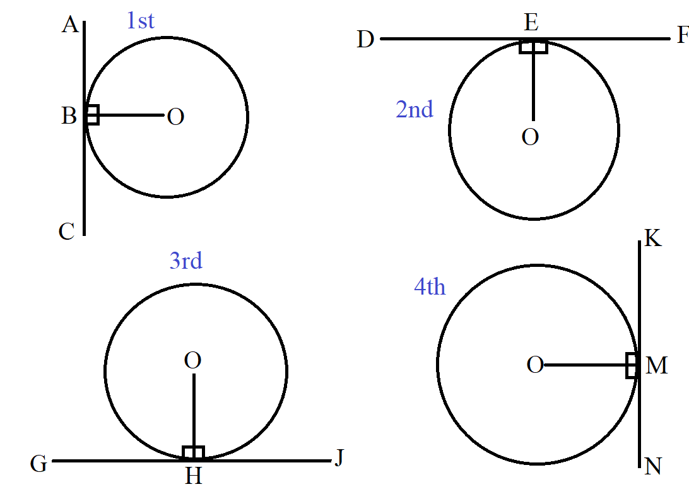
$ \underline{Theorem\;6} \\[3ex] 1st\;\;Circle:\;\;radius\;OB \perp tangent\;ABC \;\;at\;\;point\;\;of\;\;contact\; B \\[3ex] 2nd\;\;Circle:\;\;radius\;OE \perp tangent\;DEF \;\;at\;\;point\;\;of\;\;contact\; E \\[3ex] 3rd\;\;Circle:\;\;radius\;OH \perp tangent\;GHJ \;\;at\;\;point\;\;of\;\;contact\; H \\[3ex] 4th\;\;Circle:\;\;radius\;OM \perp tangent\;KMN \;\;at\;\;point\;\;of\;\;contact\; M \\[3ex] $
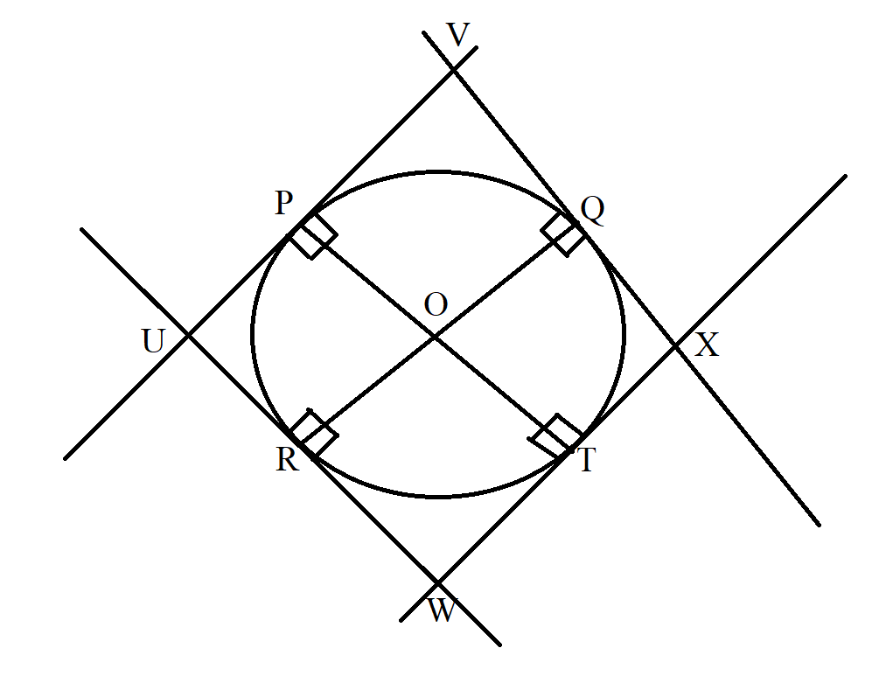
$ Radius\;OP \perp tangent\;UPV \;\;at\;\;point\;\;of\;\;contact\; P \\[3ex] Radius\;OQ \perp tangent\;VQX \;\;at\;\;point\;\;of\;\;contact\; Q \\[3ex] Radius\;OT \perp tangent\;WTX \;\;at\;\;point\;\;of\;\;contact\; T \\[3ex] Radius\;OR \perp tangent\;URW \;\;at\;\;point\;\;of\;\;contact\; R \\[3ex] $
(7.) Intersecting Tangents Theorem or Intersecting Tangent-Tangent Theorem and
Angle of Intersecting Tangents Theorem
If two tangents are drawn from the same external point:
(a.) the two tangents are equal in length
(b.) the line joining the external point and the centre of the circle bisects the angle formed by the two tangents.
(c.) the line joining the external point and the centre of the circle bisects the angle formed by the two radii.
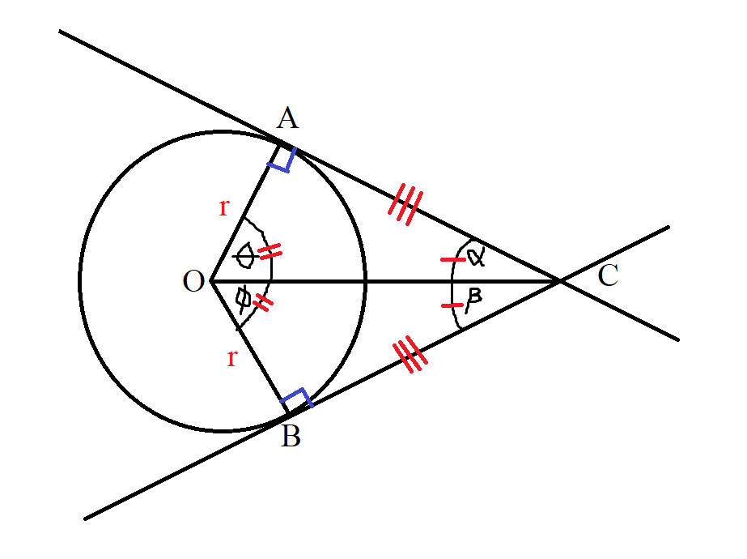
$ Radius = r \\[3ex] Circle\;\;Centers = OA \;\;and\;\; OB \\[3ex] External\;\;Point = C \\[3ex] Tangents = AC \;\;and\;\; BC \\[3ex] Points\;\;of\;\;Contact = A \;\;and\;\; B \\[3ex] \angle OCA = \alpha \\[3ex] \angle OCB = \beta \\[3ex] \angle AOC = \theta \\[3ex] \angle BOC = \phi \\[5ex] \underline{Theorem\;7} \\[3ex] AC = BC...tangents\;\;drawn\;\;from\;\;the\;\;same\;\;external\;\;point\; C \\[3ex] \alpha = \beta \\[3ex] ... the\;\;line\;\;joining\;\;the\;\;external\;\;point\;C \;\;and\;\;the\;\;centre\;\;O \;\;bisects\;\;the\;\;\angle\;\;formed\;\;by\;\;the\;\;two\;\;tangents \\[5ex] Because: \\[3ex] \angle OAC = \angle OBC = 90^\circ ...radius \perp tangent \;\;at\;\;point\;\;of\;\;contact ...Theorem\;6 \\[3ex] and \\[3ex] \angle OCA = \angle OCB ...Theorem\;7 \\[3ex] and \\[3ex] radius = radius \\[3ex] \implies \\[3ex] \angle AOC = \angle BOC ... AAS\;\;Congruency\;\;(Angle-Angle-Side\;\;Congruency) \\[3ex] \therefore \theta = \phi \\[3ex] $
(8.) Alternate Segment Theorem
The angle between a tangent to a circle and a chord drawn from the point of contact, is equal to the angle in the
alternate segment.
Whenever you have:
(a.) a tangent and
(b.) a chord drawn from that tangent
then at the point of contact between the tangent and the chord, you may want to watch out for this theorem.
Remember that a chord divides a circle into two segments.
When a chord is drawn from the tangent at the point of contact, one of the segments is close to the tangent, and the
other segment (alternate segment) is not close to the tangent.
The angle in the alternate segment means the angle in the segment that is not close to the tangent.
Watch out for the position/location of the angles.
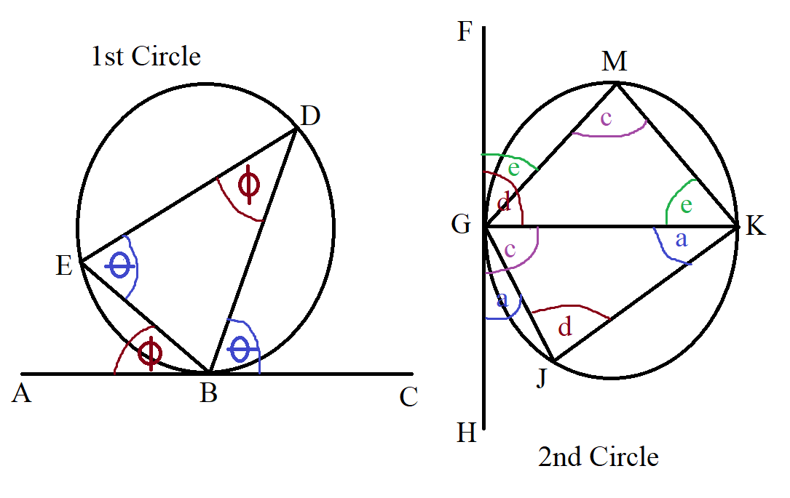
$ \underline{1st\;\;Circle} \\[3ex] Tangent = ABC \\[3ex] Chord = BD \\[3ex] Angle\;\;between\;\;tangent\;ABC \;\;and\;\; chord\;BD = \theta \\[3ex] Alternate\;\;Segment = BED \\[3ex] Angle\;\;in\;\;the\;\;alternate\;\;segment = \theta \\[3ex] Also: \\[3ex] Tangent = ABC \\[3ex] Chord = EB \\[3ex] Angle\;\;between\;\;tangent\;ABC \;\;and\;\; chord\;EB = \phi \\[3ex] Alternate\;\;Segment = EDB \\[3ex] Angle\;\;in\;\;the\;\;alternate\;\;segment = \phi \\[5ex] \underline{2nd\;\;Circle} \\[3ex] Tangent = FGH \\[3ex] Chord = GM \\[3ex] Angle\;\;between\;\;tangent\;FGH \;\;and\;\; chord\;GM = e \\[3ex] Alternate\;\;Segment = MKG \\[3ex] Angle\;\;in\;\;the\;\;alternate\;\;segment = e \\[3ex] Also: \\[3ex] Tangent = FGH \\[3ex] Chord = GK \\[3ex] Angle\;\;between\;\;tangent\;FGH \;\;and\;\; chord\;GK = d \\[3ex] Alternate\;\;Segment = KJG \\[3ex] Angle\;\;in\;\;the\;\;alternate\;\;segment = d \\[3ex] Also: \\[3ex] Tangent = FGH \\[3ex] Chord = GK \\[3ex] Angle\;\;between\;\;tangent\;FGH \;\;and\;\; chord\;GK = c \\[3ex] Alternate\;\;Segment = GMK \\[3ex] Angle\;\;in\;\;the\;\;alternate\;\;segment = c \\[3ex] Also: \\[3ex] Tangent = FGH \\[3ex] Chord = GJ \\[3ex] Angle\;\;between\;\;tangent\;FGH \;\;and\;\; chord\;GJ = a \\[3ex] Alternate\;\;Segment = GKJ \\[3ex] Angle\;\;in\;\;the\;\;alternate\;\;segment = a \\[3ex] $
(9.) If a line drawn from the center of the circle bisects a chord, then:
(a.) it bisects its arc (the angle opposite the chord) and
(b.) it is perpendicular to the chord.

(10.) If a line drawn from the center of the circle is perpendicular to a chord, then:
(a.) it bisects the chord and
(b.) it bisects its arc (the angle opposite the chord).

(11.) Intersecting Chords Theorem
When two chords intersect, the product of the lengths of the segments of one chord is equal to the product of the
lengths of the segments of the other chord.

$ RT * TS = PT * TQ ...Intersecting\;\;Chords\;\;Theorem \\[3ex] $
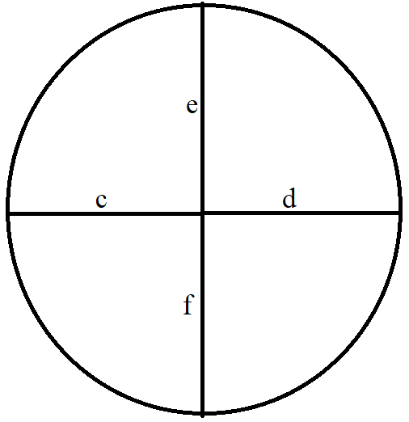
$ c * d = e * f ...Intersecting\;\;Chords\;\;Theorem \\[3ex] $
(12.) Angle of Intersecting Chords Theorem
The angle formed when two chords intersect is equal to half the sum of the intercepted arcs.
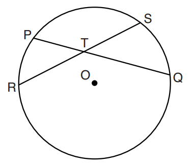
$ Center:\;\; O \\[3ex] Chords:\;\; |RS|\;\;and\;\;|PQ| \\[3ex] Arcs:\;\; \overset{\huge\frown}{PR}\;\;and\;\;\overset{\huge\frown}{SQ};\;\;\overset{\huge\frown}{PS}\;\;and\;\;\overset{\huge\frown}{RQ} \\[5ex] \underline{Similar\;\;Arcs:}\;\; \overset{\huge\frown}{PR}\;\;and\;\;\overset{\huge\frown}{SQ} \\[3ex] \angle\;\;between\;\;Similar\;\;Arcs:\;\; \angle PTR \;\;and\;\; \angle STQ \\[3ex] \angle PTR = \angle STQ ...Vertical\;\;\angle s\;\;are\;\;equal \\[3ex] \underline{Angle\;\;of\;\;Intersecting\;\;Chords\;\;Theorem} \\[3ex] \angle PTR = \dfrac{\overset{\huge\frown}{PR} + \overset{\huge\frown}{SQ}}{2} \\[5ex] \angle STQ = \dfrac{\overset{\huge\frown}{PR} + \overset{\huge\frown}{SQ}}{2} \\[7ex] Also: \\[5ex] \underline{Similar\;\;Arcs:}\;\; \overset{\huge\frown}{PS}\;\;and\;\;\overset{\huge\frown}{RQ} \\[3ex] \angle\;\;between\;\;Similar\;\;Arcs:\;\; \angle PTS \;\;and\;\; \angle RTQ \\[3ex] \angle PTS = \angle RTQ ...Vertical\;\;\angle s\;\;are\;\;equal \\[3ex] \underline{Angle\;\;of\;\;Intersecting\;\;Chords\;\;Theorem} \\[3ex] \angle PTS = \dfrac{\overset{\huge\frown}{PS} + \overset{\huge\frown}{RQ}}{2} \\[5ex] \angle RTQ = \dfrac{\overset{\huge\frown}{PS} + \overset{\huge\frown}{RQ}}{2} \\[7ex] $ Example 2:
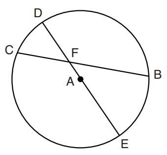
$ Center:\;\; A \\[3ex] Chords:\;\; |CB|\;\;and\;\;|DE| \\[3ex] Arcs:\;\; \overset{\huge\frown}{CD}\;\;and\;\;\overset{\huge\frown}{BE};\;\;\overset{\huge\frown}{DB}\;\;and\;\;\overset{\huge\frown}{CE} \\[5ex] Diameter:\;\; \overline{DAE} \\[3ex] \implies \\[3ex] \overset{\huge\frown}{CD} + \overset{\huge\frown}{CE} = 180^\circ ...arcs\;\;of\;\;semicircle \\[3ex] \overset{\huge\frown}{DB} + \overset{\huge\frown}{BE} = 180^\circ ...arcs\;\;of\;\;semicircle \\[5ex] \underline{Given\;\;only:}\;\; \overset{\huge\frown}{CD}\;\;and\;\;\overset{\huge\frown}{DB} \\[3ex] \overset{\huge\frown}{CE} = 180 - \overset{\huge\frown}{CD} \\[3ex] \overset{\huge\frown}{BE} = 180 - \overset{\huge\frown}{DB} \\[5ex] \underline{Similar\;\;Arcs:}\;\; \overset{\huge\frown}{CD}\;\;and\;\;\overset{\huge\frown}{BE} \\[3ex] \angle\;\;between\;\;Similar\;\;Arcs:\;\; \angle CFD \;\;and\;\; \angle BFE \\[3ex] \underline{Angle\;\;of\;\;Intersecting\;\;Chords\;\;Theorem} \\[3ex] \angle CFD = \dfrac{\overset{\huge\frown}{CD} + \overset{\huge\frown}{BE}}{2} \\[5ex] \angle CFD = \dfrac{\overset{\huge\frown}{CD} + (180 - \overset{\huge\frown}{DB})}{2} \\[5ex] \angle BFE = \angle CFD ...Vertical\;\;\angle s\;\;are\;\;equal \\[7ex] Also: \\[5ex] \underline{Similar\;\;Arcs:}\;\; \overset{\huge\frown}{CE}\;\;and\;\;\overset{\huge\frown}{DB} \\[3ex] \angle\;\;between\;\;Similar\;\;Arcs:\;\; \angle CFE \;\;and\;\; \angle DFB \\[3ex] \underline{Angle\;\;of\;\;Intersecting\;\;Chords\;\;Theorem} \\[3ex] \angle CFE = \dfrac{\overset{\huge\frown}{DB} + \overset{\huge\frown}{CE}}{2} \\[5ex] \angle CFE = \dfrac{\overset{\huge\frown}{DB} + (180 - \overset{\huge\frown}{CD})}{2} \\[5ex] \angle DFB = \angle CFE ...Vertical\;\;\angle s\;\;are\;\;equal $
(13.) Intersecting Secants Theorem or Intersecting Secant-Secant Theorem
In the intersection of two secants from the same external point:
the product of the distance between the first point and the external point and the distance between the
second point and the external point for the first secant is equal to
the product of the distance between the first point and the external point and the distance between the
second point and the external point for the second secant.
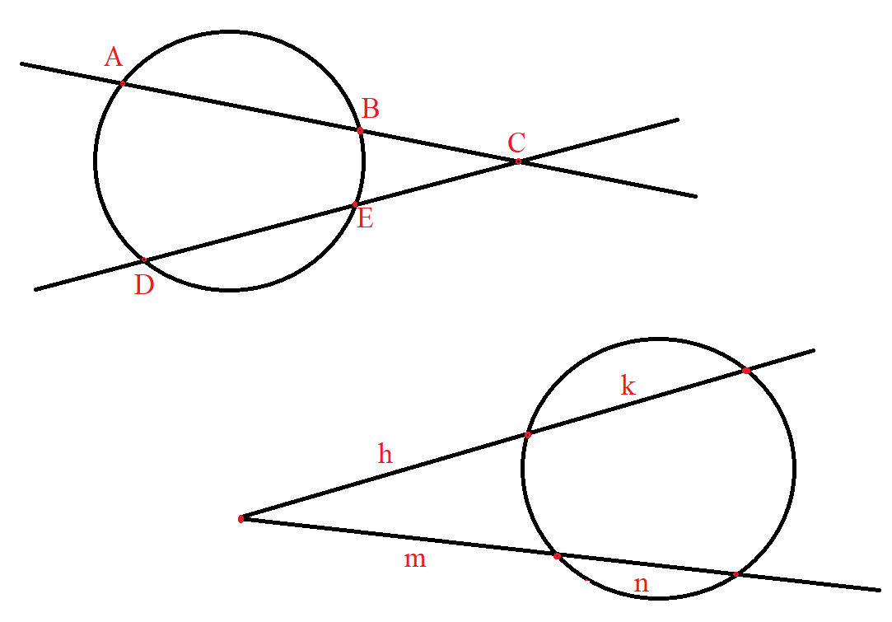
$ \underline{Intersecting\;\;Secants\;\;Theorem} \\[3ex] BC * AC = EC * DC \\[3ex] h * (h + k) = m * (m + n) \\[3ex] $
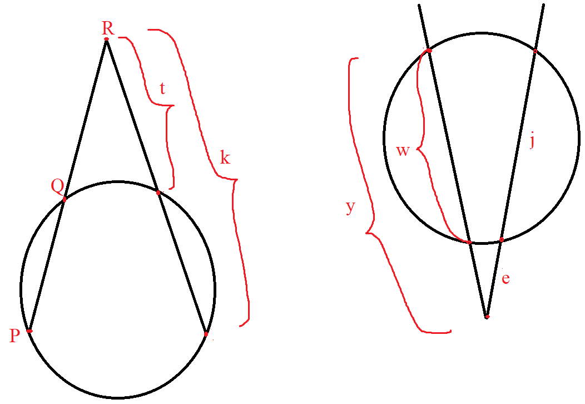
$ \underline{Intersecting\;\;Secants\;\;Theorem} \\[3ex] QR * PR = t * k \\[3ex] (y - w) * y = e * (e + j) \\[3ex] $
(14.) Angle of Intersecting Secants (Inside the Circle) Theorem
The angle formed when two secants intersect inside a circle is equal to half the sum of the intercepted arcs.
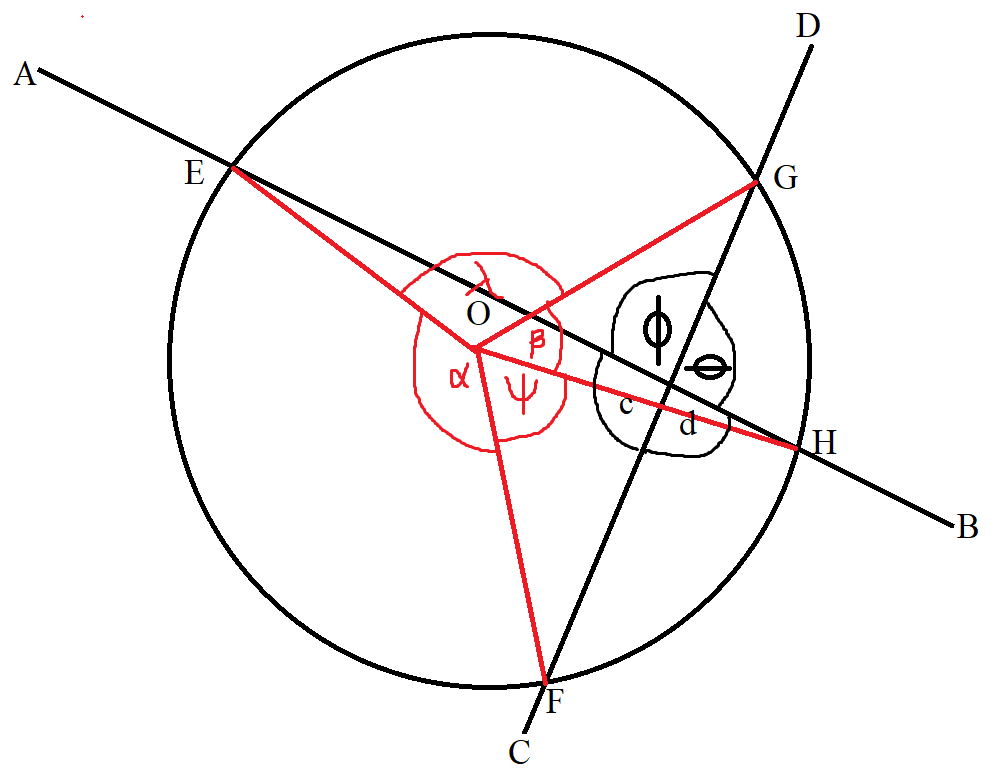
$ Center:\;\; O \\[3ex] Secants:\;\; |AEB|\;\;and\;\;|CGD| \\[3ex] Arcs:\;\; \overset{\huge\frown}{EF}\;\;and\;\;\overset{\huge\frown}{GH};\;\;\overset{\huge\frown}{EG}\;\;and\;\;\overset{\huge\frown}{FH} \\[5ex] \underline{Central\;\;\angle = Intercepted\;\; \overset{\huge\frown}{}} \\[3ex] \alpha = \overset{\huge\frown}{EF} \\[3ex] \psi = \overset{\huge\frown}{FH} \\[3ex] \beta = \overset{\huge\frown}{GH} \\[3ex] \lambda = \overset{\huge\frown}{EG} \\[5ex] $
Please note these important points as it will help us in writing the theorem:
(1.) $c$ has the same shape as $\alpha$
(2.) $d$ has the same shape as $\psi$
(3.) $\phi$ has the same shape as $\lambda$
(4.) $\theta$ has the same shape as $\beta$
(5.) $\overset{\huge\frown}{EF}$ is opposite to $\overset{\huge\frown}{GH}$
(5.) $\overset{\huge\frown}{EG}$ is opposite to $\overset{\huge\frown}{FH}$
$
\underline{\angle\;\;of\;\;Intersecting\;\;Secants\;(Inside\;\;the\;\;Circle)} \\[3ex]
c = \dfrac{\overset{\huge\frown}{EF} + \overset{\huge\frown}{GH}}{2} \\[5ex]
c = \dfrac{\alpha + \beta}{2} \\[5ex]
Similarly: \\[3ex]
\phi = \dfrac{\overset{\huge\frown}{EG} + \overset{\huge\frown}{FH}}{2} \\[5ex]
\phi = \dfrac{\lambda + \psi}{2} \\[5ex]
\underline{Vertical\;\angle s\;\;are\;\;equal} \\[3ex]
\theta = c = \dfrac{\alpha + \beta}{2} \\[5ex]
d = \phi = \dfrac{\lambda + \psi}{2} \\[5ex]
$
(15.) Angle of Intersecting Secants (Outside the Circle) Theorem
The angle formed when two secants intersect outside a circle is equal to half the difference of the intercepted arcs.
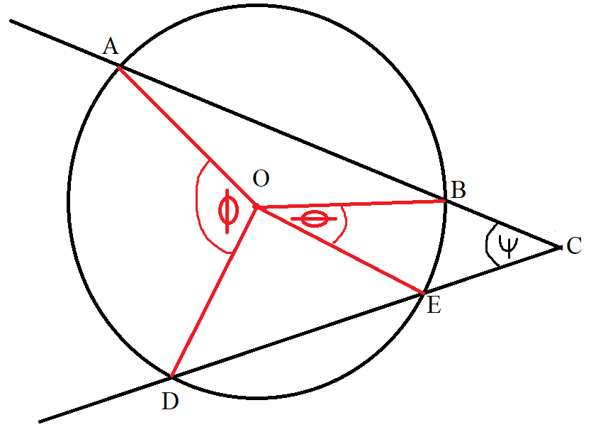
$ Center:\;\; O \\[3ex] Secants:\;\; |ABC|\;\;and\;\;|DEC| \\[3ex] Major\;\;Arc:\;\; \overset{\huge\frown}{AD} \\[3ex] Minor\;\;Arc:\;\; \overset{\huge\frown}{BE} \\[5ex] \underline{Central\;\;\angle = Intercepted\;\; \overset{\huge\frown}{}} \\[3ex] \phi = \overset{\huge\frown}{AD} = Major\;\;Arc \\[3ex] \theta = \overset{\huge\frown}{BE} = Minor\;\;Arc \\[5ex] \underline{\angle\;\;of\;\;Intersecting\;\;Secants\;(Outside\;\;the\;\;Circle)} \\[3ex] \psi = \dfrac{Major\;\;Arc - Minor\;\;Arc}{2} \\[5ex] \psi = \dfrac{\overset{\huge\frown}{AD} - \overset{\huge\frown}{BE}}{2} \\[5ex] \psi = \dfrac{\phi - \theta}{2} \\[5ex] $
(16.) Intersecting Secant-Tangent Theorem or Intersecting Tangent-Secant Theorem
In the intersection of a secant and a tangent from the same external point:
the product of the distance between the first point and the external point and the distance between the
second point and the external point for the secant is equal to
the square of the distance between the point of contant and the external point for the tangent.
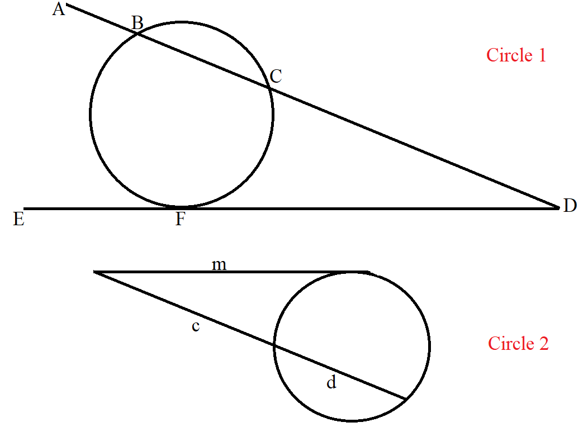
$ \underline{Intersecting\;\;Secant-Tangent\;\;Theorem} \\[3ex] \underline{Circle\;1} \\[3ex] CD * BD = FD * FD \\[3ex] \overline{CD} * \overline{BD} = \overline{FD}^2 \\[5ex] \underline{Circle\;2} \\[3ex] c * (c + d) = m * m \\[3ex] c(c + d) = m^2 \\[3ex] $
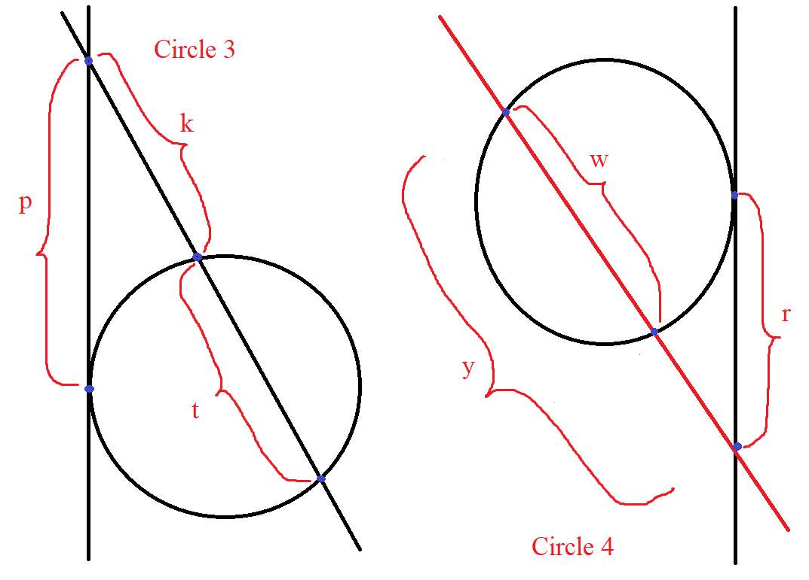
$ \underline{Intersecting\;\;Tangent-Secant\;\;Theorem} \\[3ex] \underline{Circle\;3} \\[3ex] p^2 = k(k + t) \\[5ex] \underline{Circle\;4} \\[3ex] (y - w) * y = r^2 \\[3ex] y(y - w) = r^2 \\[3ex] $
(17.) Angle of Intersecting Secant-Tangent Theorem
The angle formed when a secant and a tangent intersect outside a circle is equal to half the difference of the intercepted arcs.
Proofs of Circle Theorems
(1.) The angle in a semicircle is a right angle (an angle of 90°).
GCSE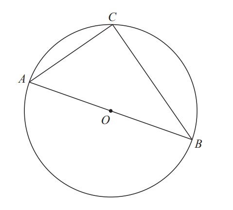
A, B and C are points on the circumference of a circle, centre O
AOB is a diameter of the circle.
Prove that angle ACB is 90°
You must not use any circle theorems in your proof.
We are asked not to use any of the circle theorems in the proof.
So, we shall use triangle theorems here (first example)...GCSE students
Then, we shall use another approach (second example) where we shall use a circle theorem...for all those who would like to learn another approach.
First Approach: Using Triangle Theorems: This is the answer to this question.
Construction: Draw the radius from the centre O to point C on the circumference
This will display two triangles: $\triangle AOC$ and $\triangle BOC$
Label the angles in the triangle.
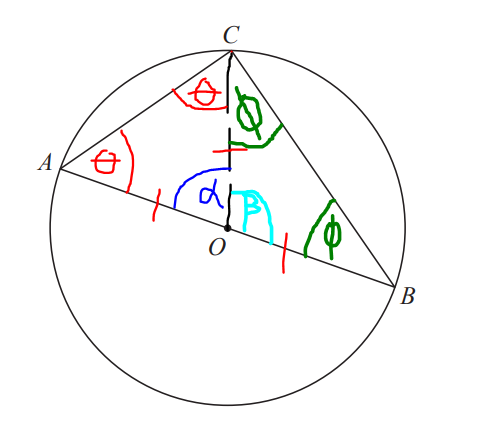
$ \underline{\triangle AOC} \\[3ex] Because: \\[3ex] |AO| = |CO| ...same\;\;radius \\[3ex] \angle OAC = \angle OCA = \theta ...base\;\;\angle s\;\;of\;\;isosceles\;\;\triangle AOC \\[3ex] \angle OAC + \angle OCA + \angle AOC = 180^\circ ...sum\;\;of\;\;\angle s\;\;of\;\;\triangle AOC \\[3ex] \implies \\[3ex] \theta + \theta + \alpha = 180 \\[3ex] 2\theta + \alpha = 180 ...eqn.(1) \\[5ex] \underline{\triangle BOC} \\[3ex] Because: \\[3ex] |BO| = |CO| ...same\;\;radius \\[3ex] \angle OBC = \angle OCB = \phi ...base\;\;\angle s\;\;of\;\;isosceles\;\;\triangle BOC \\[3ex] \angle OBC + \angle OCB + \angle BOC = 180^\circ ...sum\;\;of\;\;\angle s\;\;of\;\;\triangle BOC \\[3ex] \implies \\[3ex] \phi + \phi + \beta = 180 \\[3ex] 2\phi + \beta = 180 ...eqn.(2) \\[5ex] \alpha + \beta = 180^\circ ...\angle s\;\;on\;\;a\;\;straight\;\;line \\[3ex] \alpha + \beta = 180...eqn.(3) \\[5ex] eqn.(1) + eqn.(2) \implies \\[3ex] (2\theta + \alpha) + (2\phi + \beta) = 180 + 180 \\[3ex] 2\theta + \alpha + 2\phi + \beta = 360 \\[3ex] 2\theta + 2\phi + \alpha + \beta = 360 \\[3ex] Substitute\;\;for\;\;eqn.(3) \\[3ex] 2\theta + 2\phi + 180 = 360 \\[3ex] 2\theta + 2\phi = 360 - 180 \\[3ex] 2\theta + 2\phi = 180 \\[3ex] 2(\theta + \phi) = 180 \\[3ex] \theta + \phi = \dfrac{180}{2} \\[5ex] \theta + \phi = 90^\circ \\[3ex] \angle ACB = \theta + \phi ...diagram \\[3ex] \therefore \angle ACB = 90^\circ \\[5ex] $ Second Approach: Using Triangle Theorem and Circle Theorem: This is not the answer to this question.
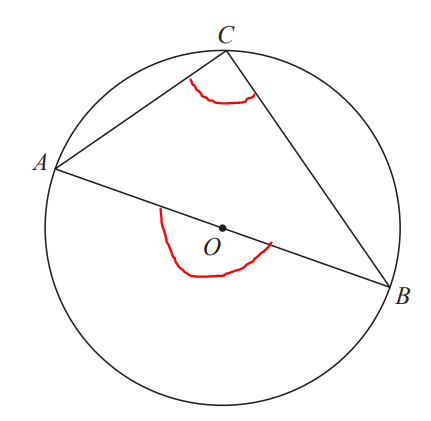
$ \angle AOB = 180^\circ ...\angle\;\;on\;\;a\;\;straight\;\;line \\[3ex] \angle AOB = 2 * \angle ACB ...\angle\;\;at\;\;centre = 2 * \angle\;\;at\;\;circumference \\[3ex] \implies \\[3ex] 180 = 2 * \angle ACB \\[3ex] 2 * \angle ACB = 180 \\[3ex] \angle ACB = \dfrac{180}{2} \\[5ex] \angle ACB = 90^\circ $
(2.) Angles in the same segment of a circle are equal.
OR
Angles subtended by a chord of a circle in the same segment of the circle are equal.
a) Prove that in a circle, the angles in the same segment are equal.

Construction: Draw the radii: from point P on the circumference to point O on the center; and from point Q on the circumference to point O on the center.

$ a) \\[3ex] \angle POQ = 2 * \angle PAQ ...\angle\;\;at\;\;centre = 2 * \angle\;\;at\;\;circumference \\[3ex] Also: \\[3ex] \angle POQ = 2 * \angle PBQ ...\angle\;\;at\;\;centre = 2 * \angle\;\;at\;\;circumference \\[3ex] \implies \\[3ex] 2 * \angle PAQ = 2 * \angle PBQ \\[3ex] Divide\;\;both\;\;sides\;\;by\;\;2 \\[3ex] \angle PAQ = \angle PBQ $
(3.) The angle which an arc of a circle subtends at the center is twice the angle which the same arc of the circle subtends at the circumference.
GCSE (b.)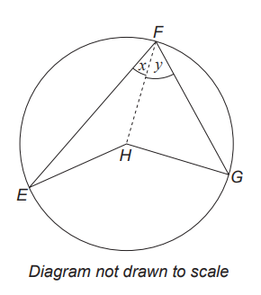
E, F and G are points on a circle with centre H
$E\hat{F}H = x$ and $G\hat{F}H = y$
Complete the proof of the following statement:
Tha angle at the centre is twice the angle at the circumference.
Proof:
$E\hat{F}G = x + y$
$F\hat{E}H = x$ (triangle FEH is isosceles)
$F\hat{H}E = .................................$
$ (b.) \\[3ex] For\;\;this\;\;question: \\[3ex] \underline{Given}: \\[3ex] E\hat{F}G = x + y ...\angle \;\;at\;\;circumference \\[3ex] Obtuse\;\; \angle EHG = \angle \;\;at\;\;centre \\[3ex] \underline{To\;\;Prove}: \\[3ex] \angle EHG = 2(x + y) \\[3ex] \underline{\triangle FEH} \\[3ex] E\hat{F}H = x...as\;\;shown\;\;in\;\;the\;\;diagram \\[3ex] F\hat{E}H = E\hat{F}H = x ...base\;\;\angle s\;\;of\;\;isosceles\;\;\triangle FEH \\[3ex] F\hat{H}E + F\hat{E}H + H\hat{F}E = 180...sum\;\;of\;\;\angle s\;\;of\;\;\triangle FEH \\[3ex] F\hat{H}E + x + x = 180 \\[3ex] F\hat{H}E + 2x = 180 \\[3ex] F\hat{H}E = 180 - 2x ...eqn.(1) \\[3ex] \underline{\triangle FEG} \\[3ex] H\hat{F}G = y...as\;\;shown\;\;in\;\;the\;\;diagram \\[3ex] F\hat{G}H = H\hat{F}G = y ...base\;\;\angle s\;\;of\;\;isosceles\;\;\triangle FEH \\[3ex] F\hat{H}G + F\hat{G}H + H\hat{F}G = 180...sum\;\;of\;\;\angle s\;\;of\;\;\triangle FEH \\[3ex] F\hat{H}G + y + y = 180 \\[3ex] F\hat{H}G + 2y = 180 \\[3ex] F\hat{H}G = 180 - 2y ...eqn.(2) \\[3ex] Reflex\;\; \angle EHG = F\hat{H}E + F\hat{H}G \\[3ex] Reflex\;\; \angle EHG = (180 - 2x) + (180 - 2y) \\[3ex] Reflex\;\; \angle EHG = 180 - 2x + 180 - 2y \\[3ex] Reflex\;\; \angle EHG = 360 - 2x - 2y \\[3ex] Reflex\;\; \angle EHG + Obtuse\;\; \angle EHG = 360^\circ...sum\;\;of\;\;\angle s\;\;at\;\;a\;\;point \\[3ex] (360 - 2x - 2y) + Obtuse\;\; \angle EHG = 360 \\[3ex] Obtuse\;\;\angle EHG = 360 - (360 - 2x - 2y) \\[3ex] Obtuse\;\;\angle EHG = 360 - 360 + 2x + 2y \\[3ex] Obtuse\;\;\angle EHG = 2x + 2y \\[3ex] Obtuse\;\;\angle EHG = 2(x + y) \\[3ex] \implies \\[3ex] $ The angle at the centre is twice the angle at the circumference.
(4.) The interior opposite angles of a cyclic quadrilateral are supplementary
NZQA For the diagram below, prove that angle C + angle A = 180°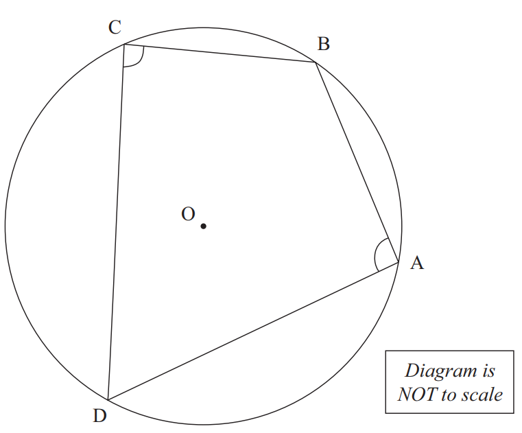
Give geometric reasons for each step in your solution.
Construction: Join the radii: from the centre O to point B, and from the centre O to point D
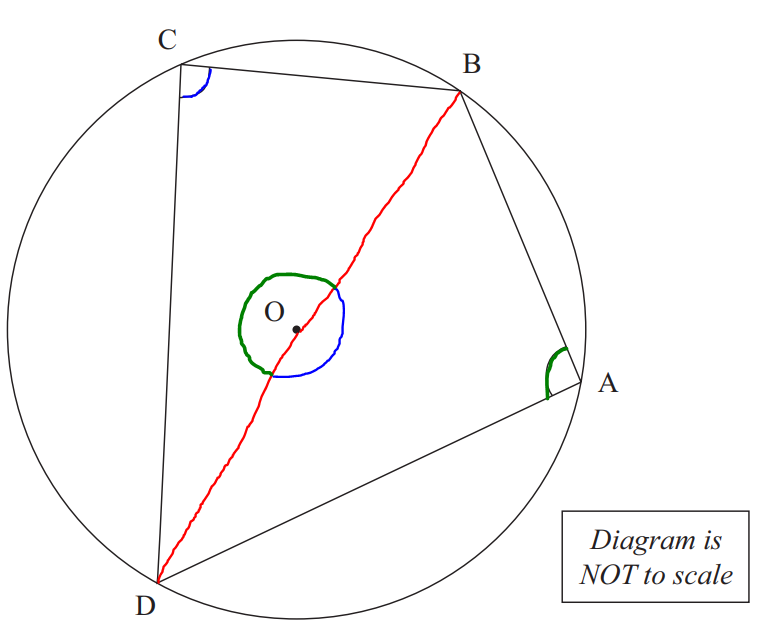
$ \color{blue}{\angle DOB} = 2 * \angle DCB ...\angle\;\;at\;\;centre = 2 * \angle\;\;at\;\;circumference \\[3ex] \color{green}{\angle DOB} = 2 * \angle DAB ...\angle\;\;at\;\;centre = 2 * \angle\;\;at\;\;circumference \\[3ex] \color{blue}{\angle DOB} + \color{green}{\angle DOB} = 360^\circ ...\angle s\;\;at\;\;a\;\;point \\[3ex] \implies \\[3ex] 2 * \angle DCB + 2 * \angle DAB = 360 \\[3ex] 2(\angle DCB + \angle DAB) = 360 \\[3ex] \angle DCB + \angle DAB = \dfrac{360}{2} \\[5ex] \angle DCB + \angle DAB = 180^\circ \\[3ex] \angle DCB = \angle C ...diagram \\[3ex] \angle DAB = \angle A ...diagram \\[3ex] \implies \\[3ex] \angle C + \angle A = 180^\circ $
(8.) The angle between a tangent to a circle and the chord drawn from the point of contact, is equal to the angle in the alternate segment.
NZQA A triangle ABC is drawn inside a circle.O is the centre of the circle.
DE is a tangent to the circle.
Point A is where DE touches the circle.
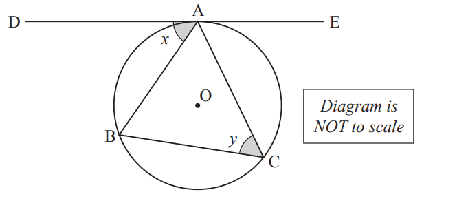
Prove that angle x equal angle y.
Justify your answer with clear geometric reasoning.
Construction: Join the radii: from centre O to the point A, and from centre O to point B
Radii: |OA| and |OB|
This forms a triangle.
Label the angles in the triangle.
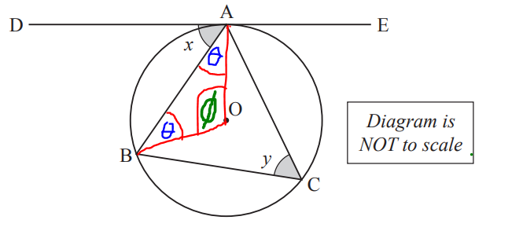
$ \angle OAB = \theta \\[3ex] \angle OBA = \theta \\[3ex] \angle AOB = \phi \\[5ex] \angle OAB = \angle OBA = \theta ...base\;\;\angle s\;\;of\;\;isosceles\;\;\triangle AOB \\[3ex] \theta + \theta + \phi = 180^\circ ...sum\;\;of\;\;\angle s\;\;of\;\;\triangle AOB \\[3ex] 2\theta + \phi = 180 ...eqn.(1) \\[5ex] \theta + x = 90^\circ ...radius\;OA \perp tangent\;DAE\;\;at\;\;point\;\;contact\;A \\[3ex] \theta + x = 90 ...eqn.(2) \\[3ex] \implies \\[3ex] \theta = 90 - x ...eqn.(3) \\[5ex] \phi = 2 * y ...\angle \;\;at\;\;centre = 2 * \angle \;\;at\;\;circumference \\[3ex] \phi = 2y ...eqn.(4) \\[5ex] Substitute\;\;eqn.(3)\;\;and\;\;eqn.(4)\;\;into\;\;eqn.(1) \\[3ex] 2\theta + \phi = 180 \\[3ex] 2(90 - x) + 2y = 180 \\[3ex] 180 - 2x + 2y = 180 \\[3ex] 2y = 180 - 180 + 2x \\[3ex] 2y = 2x \\[3ex] Divide\;\;both\;\;sides\;\;by\;\;2 \\[3ex] y = x \\[3ex] x = y \\[3ex] $ Therefore, the angle between the tangent DAE and the chord AB (the angle is x) is equal to the angle in the alternate segment (the angle is y)
NSC In the diagram, chords DE, EF and DF are drawn in the circle with centre O.
KFC is a tangent to the circle at F.
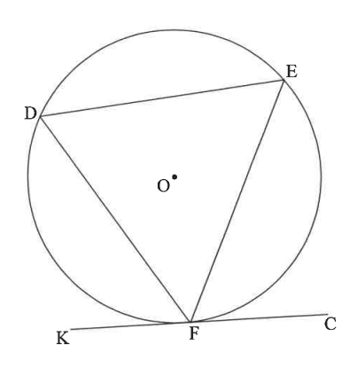
Prove the theorem which states that $D\hat{F}K = \hat{E}$
Construction: Join the radii: from centre O to the point D, and from centre O to point F
Radii: |OD| and |OF|
This forms a triangle.
Label the angles in the triangle.
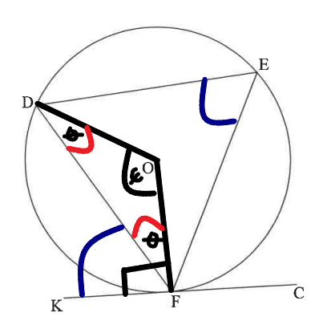
$ \angle ODF = \theta \\[3ex] \angle OFD = \theta \\[3ex] \angle DOF = \psi \\[5ex] \angle ODF = \angle OFD = \theta ...base\;\;\angle s\;\;of\;\;isosceles\;\;\triangle DOF \\[3ex] \theta + \theta + \psi = 180^\circ ...sum\;\;of\;\;\angle s\;\;of\;\;\triangle DOF \\[3ex] 2\theta + \psi = 180 \\[3ex] \psi = 180 - 2\theta ...eqn.(1) \\[5ex] \psi = 2 * \hat{E} ...\angle \;\;at\;\;centre = 2 * \angle \;\;at\;\;circumference \\[3ex] \psi = 2\hat{E} ...eqn.(2) \\[5ex] \psi = \psi \implies eqn.(2) = eqn.(1) \\[3ex] 2\hat{E} = 180 - 2\theta \\[3ex] 2\hat{E} = 2(90 - \theta) \\[3ex] \hat{E} = 90 - \theta \\[3ex] \theta = 90 - \hat{E} ... eqn.(3) \\[5ex] \theta + D\hat{F}K = 90^\circ ...radius\;OF \perp tangent\;KFC\;\;at\;\;point\;\;contact\;F \\[3ex] \theta + D\hat{F}K = 90 \\[3ex] \theta = 90 - D\hat{F}K ...eqn.(4) \\[5ex] \theta = \theta \implies eqn.(3) = eqn.(4) \\[3ex] 90 - \hat{E} = 90 - D\hat{F}K \\[3ex] D\hat{F}K = 90 - 90 + \hat{E} \\[3ex] D\hat{F}K = \hat{E} \\[3ex] $ Therefore, the angle between the tangent KFC and the chord DF (angle DFK) is equal to the angle in the alternate segment (angle E)
References
Chukwuemeka, S.D (2016, April 30). Samuel Chukwuemeka Tutorials - Math, Science, and Technology.
Retrieved from https://www.samuelchukwuemeka.com
Authority (NZQA), (n.d.). Mathematics and Statistics subject resources. www.nzqa.govt.nz. Retrieved December 14, 2020, from https://www.nzqa.govt.nz/ncea/subjects/mathematics/levels/
CrackACT. (n.d.). Retrieved from http://www.crackact.com/act-downloads/
CSEC Math Tutor. (n.d). Retrieved from https://www.csecmathtutor.com/past-papers.html
DLAP Website. (n.d.). Curriculum.gov.mt. https://curriculum.gov.mt/en/Examination-Papers/Pages/list_secondary_papers.aspx
Elementary, Intermediate Tests and High School Regents Examinations : OSA : NYSED. (2019).
Nysedregents.org. https://www.nysedregents.org/
Free Jamb Past Questions And Answer For All Subject 2020. (2020, January 31). Vastlearners. https://www.vastlearners.com/free-jamb-past-questions/
GCSE and SQA Exam Past Papers: Revision World. Retrieved April 6, 2020, from https://revisionworld.com/gcse-revision/gcse-exam-past-papers
JAMB Past Questions, WAEC, NECO, Post UTME Past Questions. (n.d.). Nigerian Scholars. Retrieved February 12, 2022, from https://nigerianscholars.com/past-questions/
KCSE Past Papers by Subject with Answers-Marking Schemes. (n.d.). ATIKA SCHOOL.
Retrieved June 16, 2022, from https://www.atikaschool.org/kcsepastpapersbysubject
Myschool e-Learning Centre - It’s Time to Study! - Myschool. (n.d.). https://myschool.ng/classroom
Netrimedia. (2022, May 2). ICSE 10th Board Exam Previous Papers- Last 10 Years. Education Observer. https://www.educationobserver.com/icse-class10-previous-papers/
NSC Examinations. (n.d.). www.education.gov.za. https://www.education.gov.za/Curriculum/NationalSeniorCertificate(NSC)Examinations.aspx
Papua New Guinea: Department of Education. (n.d.). www.education.gov.pg. https://www.education.gov.pg/TISER/exams.html
West African Examinations Council (WAEC). Retrieved May 30, 2020, from https://waeconline.org.ng/e-learning/Mathematics/mathsmain.html